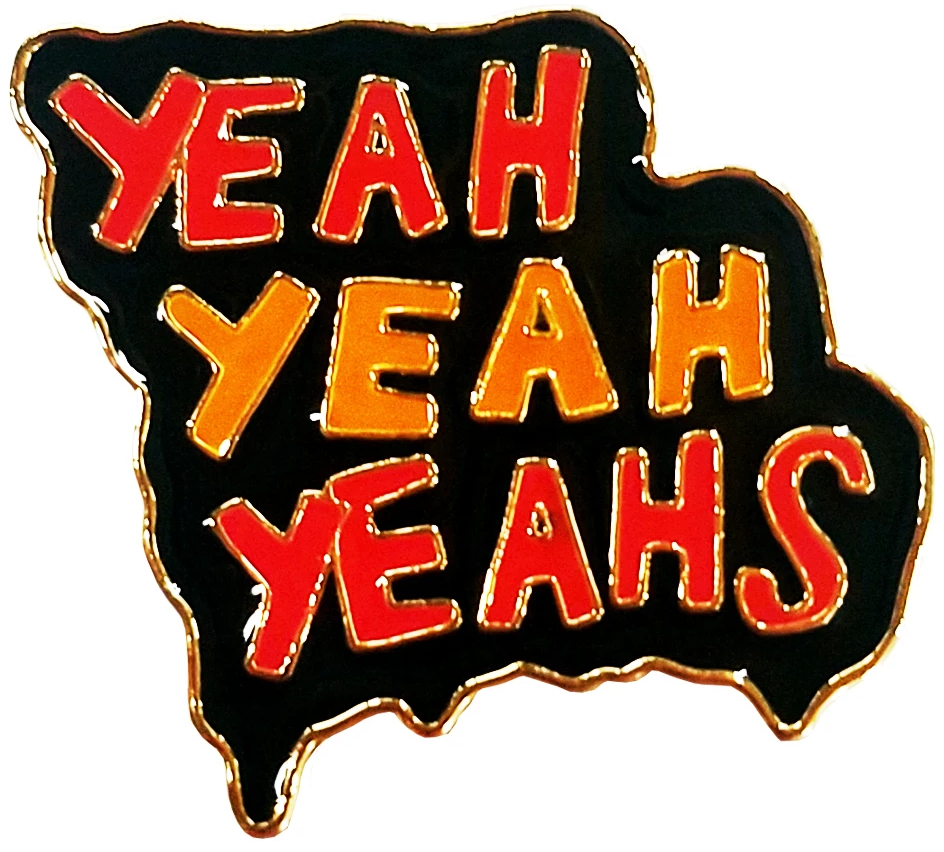
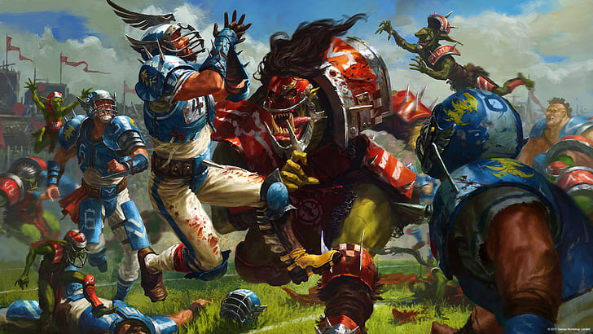
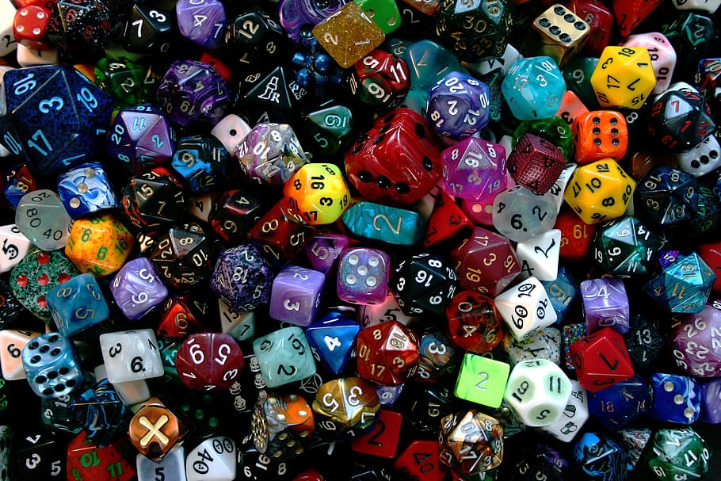

Hello! My name is Jason Burke, and I'm a programmer! I'm a big fan of movies and board games, so a number of my projects have some relation to those! Many are built to streamline the book-keeping for board games that I love.
I live in Chicago, and currently work in Medical Education. I work with students while they rotate on their Surgery Clerkship during their 3rd year of medical school.
In my spare time I run and compete in Warhammer events in the Chicago area. Blood Bowl and Warhammer Underworlds are my favorites, but I play other games as well! For these games you build and paint your own miniatures.

My Projects:
Horiseon Website
Band Fansite

Blood Bowl Toolkit (In Progress)

Dice Roller (In Progress)

PROJECT 5